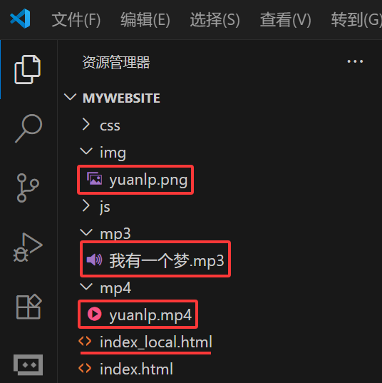

3 是时候建一个工程了
3.1 建一堆文件夹
创建并组织一个清晰的项目文件夹（例如：project-name -> index.html, css/, img/, mp3/, mp4/）。
良好的命名习惯：使用小写字母、数字和短横线（-）组成，避免使用中文、空格和特殊字符。
清晰的项目结构：建议组织为 index.html, css/, img/, mp3/, mp4/ 等子文件夹，分别存放 HTML、CSS、图片、音频、视频等文件。
HTML 文件：文件名建议为 index.html，作为项目的入口文件。
CSS 文件：建议在 css/ 文件夹下创建一个或多个 CSS 文件，例如 style.css、reset.css 等。
图片文件：建议在 img/ 文件夹下存放项目所需的图片文件，例如 logo.png、bg.jpg 等。
音频文件：建议在 mp3/ 文件夹下存放项目所需的音频文件，例如 bgm.mp3、effect.mp3 等。
视频文件：建议在 mp4/ 文件夹下存放项目所需的视频文件，例如 intro.mp4、demo.mp4 等。
代码文件：建议在 js/ 文件夹下创建一个或多个js文件，例如 script.js、index.js 等。
3.2 一个简单的网页
3.2.1 利用网络素材制作网页
你可以从网上下载一些免费的图片、音频、视频素材，这里以湖北大学官网的在线链接为例：
图片，如 湖北大学全景图在线地址：
https://www.hubu.edu.cn/images/20231201.jpg;音频，如 湖北大学校歌在线地址：
https://www.hubu.edu.cn/__local/5/50/AB/91701771B9BA40FEE0F06C4FBEE_9DCF0850_642AAD.mp3;视频，如 湖北大学之歌MV在线地址：
https://www.hubu.edu.cn/__local/1/52/9E/AB0F466B9E8985AD3CA2517495B_A908C8F4_105A73A8.mp4?e=.mp4。打开 VS Code 中之前的mywebsite工程
打开index.html，在index.html文件中进行编写代码，代码如下：
<!DOCTYPE html>
<html lang="en">
<head>
<meta charset="UTF-8" />
<meta name="viewport" content="width=device-width, initial-scale=1.0" />
<title>Document</title>
</head>
<body>
<h1>湖北大学欢迎您!</h1>
<p>这是湖北大学的官方网站<a href="http://www.hubu.edu.cn"></a></p>
<!-- 这里放导航栏 -->
<nav>
<ul>
<li><a href="#home">首页</a></li>
<li><a href="#about">关于我们</a></li>
<li><a href="#panorama">湖北大学正门全景</a></li>
<li><a href="#music">湖北大学校歌</a></li>
<li><a href="#video">湖北大学视频</a></li>
<li><a href="#contact">联系我们</a></li>
</ul>
</nav>
<!-- 这里放内容区域 -->
<main>
<h2 id="about">关于我们</h2>
<p>湖北大学是一个致力于教育的学校，致力于为学生提供优质的教育服务。</p>
<h2 id="panorama">湖北大学正门全景</h2>
<p><img src="https://www.hubu.edu.cn/images/20231201.jpg" alt="湖北大学正门全景" /></p>
<h2 id="music">湖北大学校歌</h2>
<p><audio src="https://www.hubu.edu.cn/__local/5/50/AB/91701771B9BA40FEE0F06C4FBEE_9DCF0850_642AAD.mp3" controls></audio></p>
<h2 id="video">湖北大学视频</h2>
<p><video src="https://www.hubu.edu.cn/__local/1/52/9E/AB0F466B9E8985AD3CA2517495B_A908C8F4_105A73A8.mp4?e=.mp4" controls></video></p>
</main>
</body>
<!-- 这里放页脚 -->
<footer>
<p id="contact">
联系我们：<a href="mailto:contact@hubu.edu.cn">contact@hubu.edu.cn</a>
<br />
地址：湖北省武汉市武昌区友谊大道368号
<br />
电话：027-88661540
</p>
</footer>
</html>预览网页效果
3.2.2 利用本地素材制作网页
如果你有自己的照片、音频、视频素材，可以把已准备好的文件重命名，如： - 照片，如 中国杂交水稻之父照片，重命名为yuanlp.png; - 音频，如 中国杂交水稻之父的“我有一个梦”，重命名为我有一个梦.mp3; - 视频，如 中国杂交水稻之父的“我有一个梦”视频，重命名为我有一个梦.mp4;

分类放到对应的文件夹中。分类放置后，如下图：

- 把以上素材组织成一个网页
- 打开 VS Code 中之前的mywebsite工程
- 新建index_local.html文件，新建index_local.html文件中进行编写代码，代码如下：
<!DOCTYPE html>
<html lang="en">
<head>
<meta charset="UTF-8" />
<meta name="viewport" content="width=device-width, initial-scale=1.0" />
<title>Document</title>
</head>
<body>
<h1>中国杂交水稻之父!</h1>
<p>
人民英雄网<a href="http://peoplehero.wust.edu.cn/index.php/View/2115.html" target="_blank">中国杂交水稻之父</a>
</p>
<!-- 这里放导航栏 -->
<nav>
<ul>
<li><a href="#home">首页</a></li>
<li><a href="#about">个人简介</a></li>
<li><a href="#panorama">照片</a></li>
<li><a href="#music">我有一个梦</a></li>
<li><a href="#video">视频</a></li>
<li><a href="#contact">联系我们</a></li>
</ul>
</nav>
<!-- 这里放内容区域 -->
<main>
<h2 id="about">个人简介</h2>
<p>袁隆平（1930年9月7日-2021年5月22日），男，汉族，生于北京，无党派人士，江西省九江市德安县人。享誉海内外的著名农业科学家，中国杂交水稻事业的开创者和领导者，中国共产党的亲密朋友，无党派人士的杰出代表，“共和国勋章”获得者，湖南省政协原副主席，国家杂交水稻工程技术研究中心原主任，中国工程院院士，被誉为“杂交水稻之父”。</p>
<h2 id="panorama">照片</h2>
<p><img src="img/yuanlp.png" alt="照片" /></p>
<h2 id="music">我有一个梦</h2>
<p><audio src="mp3/我有一个梦.mp3" controls></audio></p>
<h2 id="video">视频</h2>
<p><video src="mp4/yuanlp.mp4" controls></video></p>
</main>
</body>
<!-- 这里放页脚 -->
<footer>
<p id="contact">
联系我们：<a href="http://www.ylpprize.org.cn/">袁隆平农业科技奖励基金会</a>
<br />
地址：长沙市芙蓉区远大二路736号 湖南杂交水稻研究中心
<br />
电话：0731-88230098
</p>
</footer>
</html>预览网页效果如下：
3.3 代码自动格式化(你只管写，我负责格式化)
使用快捷键 Shift+Alt+F 格式化当前文件。
使用Prettier进行代码自动格式化，初次接触“代码风格一致性”。
- 在 VS Code 中，点击左下角齿轮图标，选择 “设置”。
- 在搜索框中输入 “Prettier”，找到 Prettier 插件的设置选项。
- 勾选 “Format On Save” 选项，保存文件时会自动格式化代码。
- 使用快捷键 Ctrl+S/Cmd+S 保存文件，即可看到代码被自动格式化，保持代码风格一致。